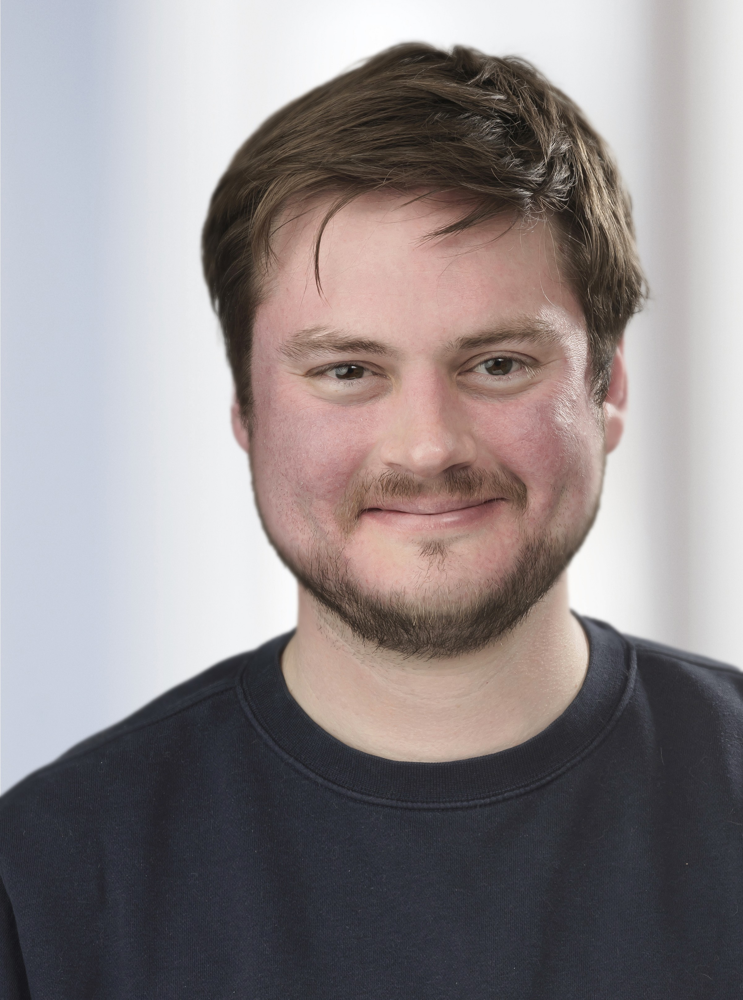

Joel Klein
Marie Skłodowska-Curie Actions Fellow · Universidade de Oxford
Oxford, Reino Unido
- Bioinformática de plantas
- Simbioses fixadoras de nitrogênio
- Genômica comparativa
- Transcriptômica
- Interações planta–microrganismo
- Agricultura sustentável
Sobre
Bioinformata de plantas com trajetória em Wageningen University, Cornell University, Academia Chinesa de Ciências Agrícolas, Utrecht University e Erasmus University. Obteve o doutorado na Utrecht University (2015–2019), onde estudou a dinâmica evolutiva do míldio da espinafre e seus mecanismos de resistência a fungicidas, em uma parceria público-privada com aplicações diretas no melhoramento de resistência. Em seguida, realizou pós-doutorado na Wageningen University com Dr. René Geurts, no projeto ENSA (Engineering Nitrogen-fixing Symbiosis for Africa), voltado à bioengenharia de nódulos fixadores de nitrogênio em culturas agrícolas. Atualmente é Marie Skłodowska-Curie Actions Fellow na Universidade de Oxford, onde integra o Rhizosphere Group e trabalha com o Professor Philip Poole no projeto ENSA.
Sua pesquisa investiga como traços complexos evoluem em plantas, com ênfase na evolução de simbioses fixadoras de nitrogênio em leguminosas. Para isso, aplica genômica comparativa, transcriptômica e aprendizado de máquina ao gênero Chamaecrista, que inclui de forma única espécies com e sem simbiossomos semelhantes a organelas. Comparando espécies filogeneticamente próximas, busca identificar as inovações genéticas que possibilitaram a evolução dessas estruturas fixadoras de nitrogênio, com o objetivo de contribuir para a redução da dependência de fertilizantes sintéticos e o avanço da segurança alimentar global.
